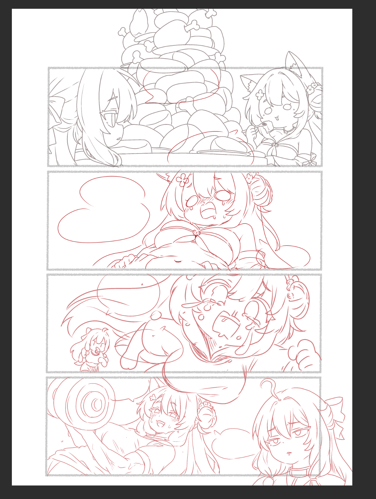
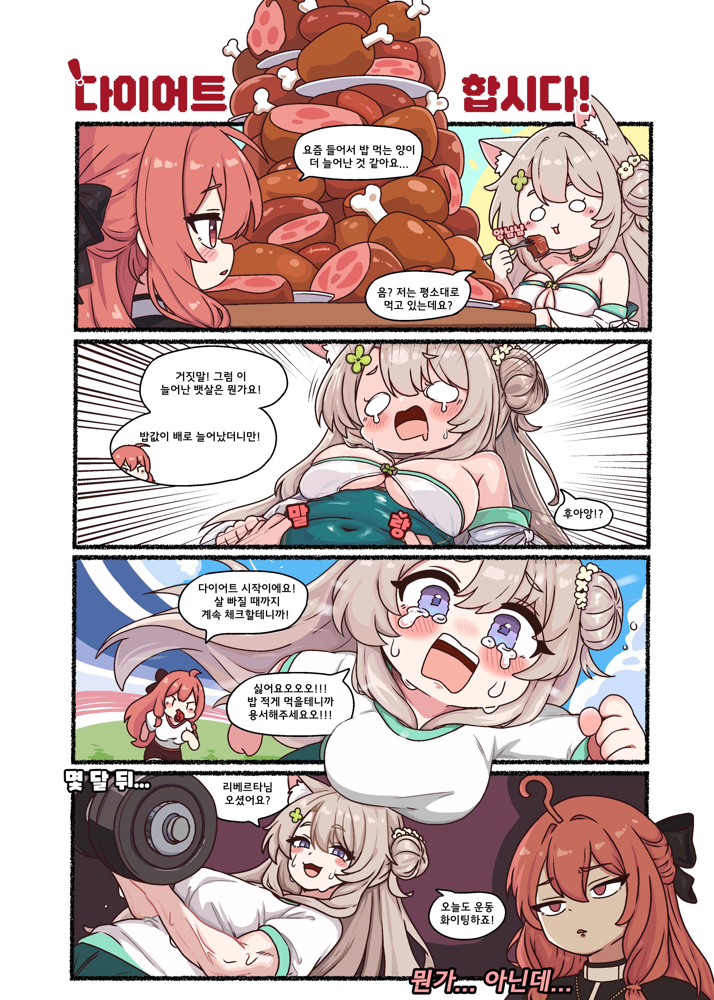

지인 작가 및 어시 도움 받으면서 공부 계속 하고 있고요...
애초에 러프및 원본PSD파일을 회사에서 검수하는데요....
채색은 제가 시도해보는것도 있고 새로 어시님 구해서 어시님한테 맡기는 경우가 대부분입니다


최근들어서 퀄리티 좋아진것도 어시님 도움이 큽니다, 이상한 부분 자주 잡아주시고 채색도 도움받아 부끄럽지만 최근 올라오는 그림들 전부가 제 실력이 이라곤 생각하지 않습니다. 어시님 없으면 이게 제 실력 최대치라 생각합니다.
이상한 부분 보이는건 걍 제 실력이슈임...ㅇㅇ....
https://www.dogdrip.net/733745711
댓글에서 AI관련 이야기가 나와 짧게 글 써봅니다
실력이 많이 늘었네